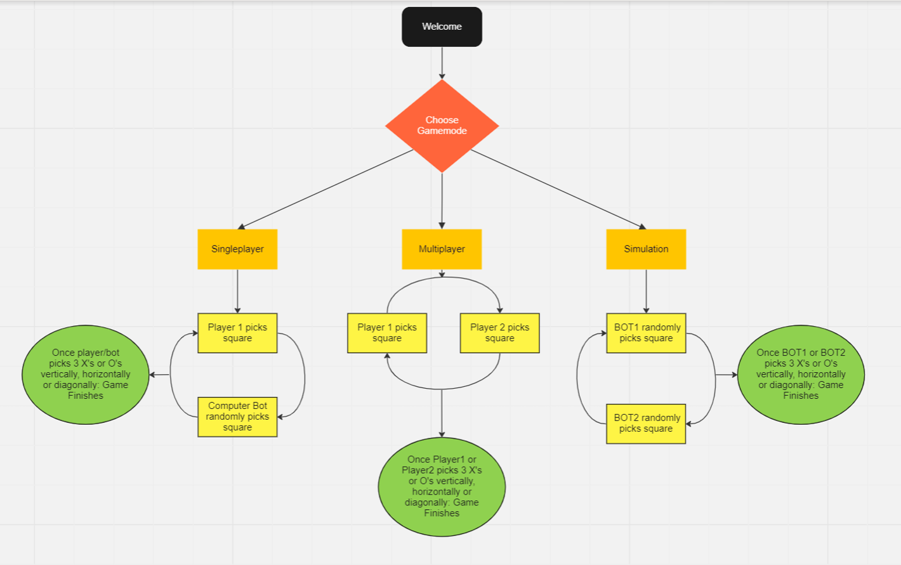

Using various references, I conducted online research to figure out how games are classified. They are often defined as activities that involve players who engage in a form of play, usually with the aim of achieving an objective such as a win. Games can come in various forms, including single-player, multiplayer, and simulations, and can be played on various platforms. I used search engines such as Google and looked at respected websites on this topic such as www.computerhope.com. Single player game is a game where input from only one person is expected. Multiplayer allows more than one player to have inputs. According to computerhope.com multiplayer games aren’t required to be online as they can be played over LAN (Local Area Network) or on the same computer/console. Simulation gameplay is where only computer bots have inputs. I found that a common game that fits these criteria is X’s and O’s (Also known as Tic Tac Toe). X’s and O’s, is played on a grid that’s 3 squares by 3 squares. It involves one player being X’s and another being O’s. Players take turns and the objective is for a player to place 3 x’s or o’s in a row either vertically, horizontally, or diagonally. My aim is to create this game with 3 options: Single player, Multiplayer and Simulation. Single player would be Player 1 playing against the computer. Multiplayer is where player 1 will play against player 2. Finally, simulation will be a computer playing against computer. This simulation mode will have an element of randomness as the computer bot will pick at random. There will be 9 inputs for the squares as there is 9 possible locations for a player to pick on the 3x3 grid. There will also be inputs to choose the game mode. My intention is to create this game so each time it runs stores game data such as time taken for game to complete. This will be stored in a .csv file. By doing this I will perform statistical analysis to find averages of results and gain insight into improvements which could be made. After gathering this data, I will create effective graphs of the resulting information using algorithms. Using the game, hypotheses can be tested to make predictions of outcomes by changing certain variables in the game. I completed research on the game and researched if it has been done before as a computer game on websites such as github.com. I found that using python would be a good way to create this game and meet my objectives.
My project is a model of the popular game X’s and O’s. The game is based in python. It is a program that will meet all requirements. It will consist of 3 game modes: Multiplayer, Single Player and Simulation. The programme starts with a simple message greeting the user. The player is then prompted to select which game mode they would like. Once game is selected, the game will run with the use of functions. A timer will also start, timing the game length which will then save to a .CSV file format. If multiplayer is selected, there are 2 real players which means each player has to input their choices. Players will take turns inputting their choices using the keyboard. The maximum possible number of inputs for this game mode is 9 as there are 9 slots. If a player picks a grid that is invalid, the programme prompts them to input their choice again. Once this mode finishes, the match result is displayed in a printed message and the statistics are stored in a .CSV file. If single player is chosen, there is one real player and one computer bot competing against each other. The player has choice of where they input however the bot adds randomness and unpredictability as they pick a square randomly. Once again, when this mode finishes, the match result is displayed and the statistics are stored in a .CSV file. If simulation is chosen, this is where 2 computer bots play against each other, and an X’s and O’s game is simulated. This game mode is fully random. This game mode will be used mainly to test hypotheses and make future predictions for the game. The game plays out the exact same as the previous modes. The flowchart (Figure 3.1) breaks down my game and how it is designed Abstraction and modelling are key concepts that are essential for creating my game. Abstraction refers to the process of removing unnecessary detail and focusing on individual important aspects of a problem. Modelling involves creating a simplified version of the system. A way modelling and abstraction is applied to my game is by breaking down entire code into smaller functions such as print_grid or win_status. This way irrelevant details are ignored, and only important ones are kept for the function of the game. Abstraction will also be used to run the different game modes. The player will input their choice of game mode and others will be ignored as they are irrelevant. This is an example of abstraction.
The game was implemented in the programming language Python. During the initial phase of the project, careful consideration was given to identifying the key functions that were critical for the project's success. However, as the development process progressed, these functions underwent significant modifications. I started out simply by trying to create my own grid for the player. I tried this by creating a 2D board numbered 1-9. I later found that this was not the right approach as the board needed to be originally an empty 2D array which would later fill with the players’ inputs. See Figure 4.1 + 4.2. After this I moved onto creating ‘if’ functions which tested whether a player’s input was a valid choice. At first, this was a solution however it later proved to be inefficient. See figure 4.3. I found that ‘while not’ loops were more efficient in checking for validity. The loop would repeat until player picked a valid choice. See figure 4.4. Comments help explain how the code functions. I ran into stops and errors during my implementation of this process. I used online existing solutions and YouTube videos to help me understand how to make it work. I added further background functions such as checking if the grid is full. All it uses is a ‘For’ loop and Boolean values which runs through the grid and checks for available spaces. If there is, then game continues unless there is already a winner. See Figure 4.5 Next was one of the biggest challenges of the project. This was implementing a way of checking for a winner on each run. My initial attempts made use of many ‘If’ statements and logic gates such as ‘AND’. I spent time calculating every possible combinations that could win on the grid. Figure 4.6 explains this. Figure 4.7 showcases early attempt. This proved to be a challenge to get working and I spent many hours on this problem. I researched numerous solutions on websites such as Github. Reading through my computer science book helped me solve this problem. I found that creating 3 functions which established the row, column, and diagonal wins and then putting it into a ‘win_status’ function which considers the current grid and checks whether the grid lines up with any of the “winning grids” established in the 3 earlier functions was a solution. This function makes use of ‘for’ range function which cycles through the 3 possible winning grids. This function is vital. Figure 4.8 showcases this. The bot was implemented for the simulation and single player game modes. The ‘random’ module is imported, and the bot makes use of this to generate a random pick for their move. This way the game has an element of randomness and hypotheses can be tested. The following is the code for the bots. They are identical. See figure 4.9 Finally, 3 different main functions are created which are the game modes. Singleplayer(), Multiplayer(), Simulation().This function makes use of the ‘csv’ module to create a csv file which stores the time inside. See figure 4.10.
Throughout the model and after completing the model, I conducted multiple tests to ensure its proper functioning. I did system testing to ensure that the entire system as a whole worked properly to ensure that it meets the requirements. I also did user testing where I’d let some people try the multiplayer mode to make sure it is easy to use. I also created test case table to help test individual components of my game. See figure 5.1 for test case table. A major problem I ran into during my initial testing was that there was a bug where the game would allow invalid moves to be made on the board for example picking the 4th row. This happened due to a logical error in the code that I found and implemented a fix. I also did simulation testing on the game to test for potential errors and also for hypotheses. I tested 2 hypotheses. My first hypothesis was that the bots had an even chance of winning. My second hypothesis is that it is beneficial to be the first player in a game of x’s and o’s I tested these hypotheses by using simulation game mode out of my full game and making adjustments. One adjustment was to implement a feature where the winner of the game would be stored to a csv file. Another adjustment was an option to run the simulation the amount of times the user inputted. For example, if the user input ‘50’ then the simulation would run 50 times and append the winner of each game into the csv file. After this I imported the matplotlib package and created a pie chart of these results. This testing revealed to me that the bots did not have an even chance of winning. I repeated hundreds of simulations and every time the simulation ran a significant amount of times, Bot1 had a clear lead. This was an interesting revelation as it revealed to me that my second hypothesis was right. From observing these results it is suggestable that being the first player provides a favourable position in the game.
The programming project for the X’s and O’s model called for the development of a game with various inputs including 3 game modes, statistical analysis on results, and the efficient storage and display of game data. The goal was to create a game that players could enjoy while also learning about the game itself by testing out hypotheses. The final product was a testament to the initial design and objectives set out at the start of the project. It was developed using the Python programming language which provided a game friendly environment. With multiple inputs, players could choose to play against each other, against the computer, or watch the computer play against itself. The game was built with the aim of providing a fun and engaging experience for players. In terms of statistical analysis, the game recorded the results of each match played, including the number time taken to finish. This data was stored in a .csv file, which allowed for efficient data manipulation. It also stored simulation mode game results where the bots would play against each other. The game also featured effective data visualization in the form of graphs such as pie and bar charts created using the Matplotlib library. This visualization helped to better understand the results of matches and to improve gameplay strategies. The game was also designed to test hypotheses and make predictions of outcomes. For example, a hypothesis was testing if each bot would win 50 times out of 100 tries in simulation mode. To improve or iterate the game, there are several potential enhancements that could be made. More advanced computer algorithms could be added, using machine learning algorithms to make the game more challenging and unpredictable. Additionally, further customization options could be added, such as the ability to choose the game board size. In conclusion, the X’s and O’s project was a success that met its objectives of creating a game with multiple inputs, multiple game modes, statistical analysis, and effective data visualization. Overall, I believe that this project turned out very well.
| Section | Word Count |
|---|---|
| 1. Meeting the Brief | |
| 2. Investigation and Plan | |
| 3. Design | |
| 4. Implementation | |
| 5. Testing | |
| 6. Evaluation | |
| Total: |